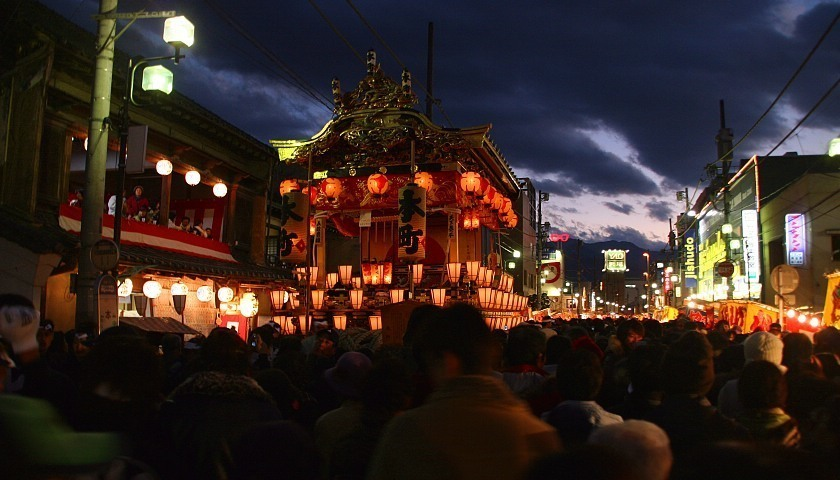

Saitama Prefecture (埼玉県, Saitama-ken) is Tokyo's neighbor to the north. Much of southeastern
Saitama, including the prefectural capital of Saitama City, are considered suburbs of Tokyo, while
its western parts are mostly rural and mountainous and include parts of the Chichibu-Tama-Kai
National Park.
The former castle town of Kawagoe and the mountainous Chichibu region, known for its night festival
held in December, are some of the prefecture's major tourist attractions.
(Source: Japan Guide)
Prefecture Image
Chichibu Night Festival
Kawagoe
Warehouse District